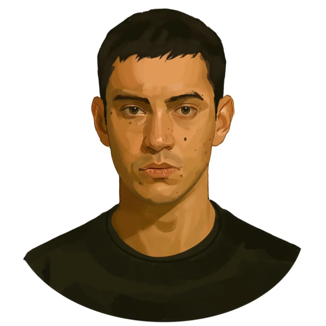

A Viadal előtt
Wyatt a Perem másik oldalán lakott, mint az Abernathy család. Családja a Bukmékerekből állt, akik
fogadásokat
szerveztek a 12. körzetben, beleértve az Éhezők viadalát is. Arra fogadtak, hogy melyik gyerekeket
aratják le,
hány évesek, hogy a Peremről vagy kereskedőkről származnak-e, és hány tesszerát visznek magukkal. Wyatt
volt a
család Oddsmestere, és meghatározta az esélyeket azokra az eseményekre, amelyekre az emberek fogadtak.
Portré

© u/IllegalSympathy, Reddit
Az Aratás
A második Nagy Mészárlás alkalmából a Kapitólium kétszer annyi kiválasztottat követelt. Ezt azért
választották,
hogy emlékeztessék a kerületeket, hogy minden egyes, a Sötét Napok során megölt kapitóliumi polgár után
két
lázadót is megöltek. Ekkorra Wyatt már nem járt iskolába, mivel 18 éves volt (majdnem 19), és
valószínűleg a
bányákban kezdett dolgozni. Wyatt volt az első a két férfi kiválasztott közül, akit a két női
kiválasztott,
Louella McCoy és Maysilee Donner után választottak ki. Röviddel ezután csatlakozott hozzájuk Woodbine
Chance,
aki el akart szökni, és ennek következtében megölték. Mivel új kiválasztottra volt szükség, az
utolsóként
Haymitch Abernathy-t választották ki.
Út a Kapitóliumba
A Kapitólium felé tartó vonaton nagyon csendes volt, és alig szólt, kivéve, amikor rámutatott arra, hogy
Plutarch
Heavensbee javította az esélyeiket azzal, hogy jó vágást adott nekik az aratásról szóló közvetítésben.
Azon az
éjszakán Wyatt úgy tett, mintha aludna, miközben kihallgatta Haymitch és Louella beszélgetését. Louella
korábban
aznap észrevette, hogy Wyatt egy érmét dobál, és rájött, hogy a Bukméker-család tagja.
A felvonulás
A felvonulás során a lovak, amelyek a szekeret húzták, megriadtak és gyors vágtába kezdtek. (spoiler!)
Wyatt és
Maysilee ugyan meg tudtak kapaszkodni, de Haymitch és Louella leesett. Amikor a lovak megálltak,
Wyatt
felkapta Louella kalapját, odament, és akkor látta, hogy a lány halott. Haymitch felkapta a
holttestet, hogy vele meneküljön
a Békeőrök elől. Wyatt figyelmeztetése, hogy hiába, nem tántorította el Haymitchet attól, hogy
elszaladjon
vele Snow elnök pódiumához.